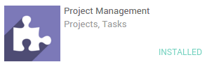

Обзор
Руководителю не всегда легко следить за тем, что делают его сотрудники. Полноценная обратная связь с клиентами может быть хорошим критерием оценки работы вашего коллектива. В Odoo есть простые механизмы получения отзывов от клиентов.
Во время работы проекта можно отправить клиенту письмо для получения отзыва. В письме ему просто нужно выбрать один из трех смайликов для оценки вашей работы (Хорошо, Нейтрально или Плохо).
Как получать отзывы клиентов
Чтобы эта функция работала необходимо выполнить некоторую настройку. Прежде всего, необходимо установить приложение Project (управление проектами). Для этого просто зайдите в модуль приложений и установите его.
Кроме того, в том же меню вам необходимо установить модуль Project Rating.

Затем вернитесь в приложение "Управление проектами" и войдите в модуль проекта. Выберите кнопку Configuration (подробности) и нажмите кнопку Settings (Настройки) в выпадающем меню. Затем выберите Allow activating customer rating on projects, at issue completion. Не забудьте применить изменения.

Как получить обратную связь от клиента?
На любом этапе текущего проекта вы можете отправить клиенту письмо на электронную почту.
Во-первых, вам нужно выбрать, для каких проектов вы хотите получать обратную связь.
Конфигурация проекта
Перейдите в приложение Project (Управление проектами), в настройках проекта выберите опцию Удовлетворенность клиента.
Шаблон сообщения электронной почты
Перейдите к настройкам этапа (щелкните значок шестеренки в верхней части столбца этапа, затем выберите Edit (Редактировать)). Выберите шаблон электронной почты, который будет использоваться. Вы можете здесь же его отредактировать.
Вот пример электронной почты, который клиент может получить:

Примечание
Чтобы оценить вашу работу, клиенту просто нужно щелкнуть мышью по смайлику («Улыбка», «Нейтральная» или «Грустная»). Клиент может ответить на письмо, чтобы добавить дополнительную информацию. Его письмо будет добавлено к обсуждению задачи.
Составление отчетов
У вас есть краткий обзор удовлетворенности в правом верхнем углу проекта.

Как отобразить рейтинги на вашем сайте?
Прежде всего, необходимо установить приложение Констуктор вебсайта. Для этого просто перейдите в модуль приложений и найдите "website builder".

Кроме того, в том же меню вам необходимо установить модуль Project Rating Issue.

Затем вы сможете опубликовать свой результат на своем веб-сайте, нажав на "Подробности" на карточке проекта, в меню выбрать "Рейтинги клиента", с в правом верхнем углу выбрать "Опубликовать"